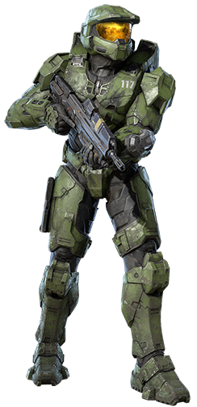

CHARACTERS
MASTER CHIEF

Master Chief Petty Officer John-117 (simply known as Master Chief), is the main character in the Halo games. He was born on March 7th, 2511 on the colony world of Eridanus-II. He was taken from his family at 6 years old to be part of the SPARTAN-II program, led by Dr. Catherine Halsey. He got many augmentations at age 14, which almost killed him. During the fall of the planet Reach, he met the AI known as Cortana. He fought the alien alliance known as the Covenant on Installation 04, which was one of the many Halo rings around the galaxy. He met 343 Guilty Spark, the monitor of Installation 04, to which he informed Chief of the Flood, a parasite that can infect anyone and reanimate corpses.
FUN FACT!
The Covenant and the Banished all call him "Demon" because they see him as an indestructible super soldier and because of him destroying Installation 04.
343 GUILTY SPARK
343 Guilty Spark was the Monitor of Installation 04, which was the first Halo ring the UNSC and Covenant found.